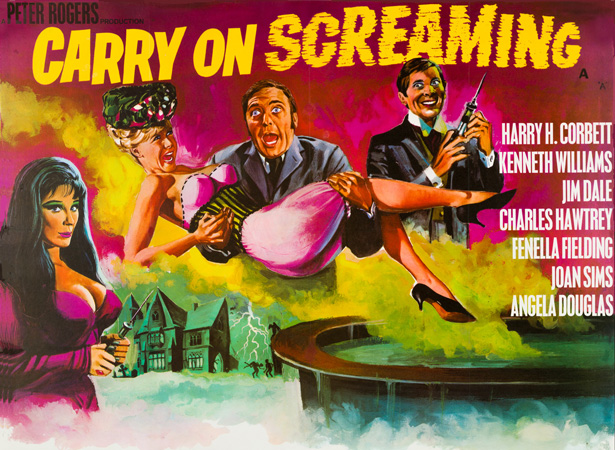
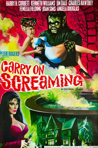
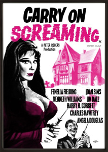
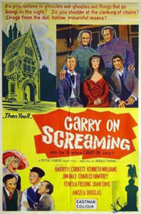

Peter Rogers
Talbot Rothwell
The film opens in Edwardian times in Hocombe Woods, where Doris Mann (Angela Douglas) and Albert Potter (Jim Dale) are courting. When Albert searches the woods for a Peeping Tom, Doris is abducted by a monster named Oddbod (Tom Clegg), which leaves a finger behind. Albert, finding the finger, rushes to the police station and reports the matter to Detective Constable Slobotham (Peter Butterworth), who in turn tells his superior, the henpecked Detective Sergeant Sidney Bung (Harry H. Corbett), who has been investigating similar disappearances in the same woods.
After searching the woods for further clues, the group stumble across the eerie Bide-A-Wee Rest Home, and are shown to the sitting-room by the butler, Sockett (Bernard Bresslaw). Sockett informs the mistress of the house, Valeria (Fenella Fielding), of their presence, and she awakens her electrically-charged brother, Dr. Orlando Watt (Kenneth Williams). Dr Watt speaks to the three men, who are frightened from the house when Dr. Watt vanishes and re-appears when his electrical charge runs down.
The next day, Bung, Slobotham and Potter interview Dan Dann, a lavatory man (Charles Hawtrey), who once worked at Bide-A-Wee as a gardener but is silenced by Oddbod before he can reveal anything. Meanwhile, the police scientist (Jon Pertwee) accidentally creates a second creature—Oddbod Junior (Billy Cornelius)—when subjecting Oddbod's finger to an electrical charge. After killing the scientist, Oddbod Junior makes his way to the mansion, where Valeria and Watt are turning people into mannequins in the manner of House of Wax to sell. Bung arrives at the house, investigating Dann's death but becomes infatuated with Valeria instead.
The next day, Potter discovers Doris—in mannequin form—in a milliner's shop but no proof can be found that it really is Doris. Bung returns to the house and discovers evidence that links Valeria and Watt to the mannequin but remains oblivious. Believing him to be on their scent, Valeria and Watt use a potion to turn Bung into Mr. Hyde and order him to steal the mannequin for them. After recovering the next day, Bung and Slobotham decide to set a trap in Hocombe Woods, with Slobotham disguised as a woman for bait. Bung's sharp-tongued wife, Emily (Joan Sims), follows, thinking Bung to be having an affair and is captured by Oddbod Junior, whilst Slobotham is captured by Oddbod. Bung, now teamed up with Potter, makes his way to the house whilst following their footprints.
After failing to dispose of Bung and Potter with a snake, the Oddbods are dispatched to deal with them. Bung and Potter are re-united with Slobotham and manage to return Doris to human form but discover that Emily has been turned into a mannequin. A battle follows, in which Albert (in Mr. Hyde form) defeats the Oddbods. Dr. Watt menaces them with petrifying liquid but is threatened by the re-animated mummy of Rubbatiti, which has come alive following a lightning strike. Rubbatiti and Watt fall into a boiling vat in the cellar, killing them both. Albert and Doris marry some time later, only to discover that Bung, whose home lacks electricity, is unable to return his wife to human form, and is now living with Valeria.
Filming dates: 10 January - 25 February 1966.
Interiors: Pinewood Studios, Buckinghamshire.
Exteriors: Windsor, Berkshire and Fulmer, Buckinghamshire.
Carry On Screaming was the second film in the series to have a sung main title theme - and the last until Carry On Emmanuelle in 1978. The theme song "Carry On Screaming" (film version only) was credited as "Anon" and was thought to have been sung by Jim Dale, who appears in the film. The singer is actually Ray Pilgrim, a session singer who sang for the Embassy label. A vinyl 45 rpm version of the song was also released in 1966 (Columbia DB 7972) by vocalist Boz Burrell, before he became bassist for the bands King Crimson and Bad Company.
Sergeant Bung's car was a 1904 Brushmobile. The company was based in Loughborough in Leicestershire, England and only six of these cars were made. Whenever Bung is driving the police car the soundtrack plays a variation of "Johnny Todd", the theme to the TV series Z Cars. Another musical gag is when Bung rides on the horse & cart and the tune "Old Ned" is used, which is the theme to Steptoe and Son.
Series Director, Gerald Thomas, provided the monster gibberish for Oddbod Junior. This wasn't the only time he would do this kind of thing as he provided the voice for the foul-mouthed Mynah bird in Carry on Behind nine years later.
When Kenneth Williams received the script he initially declined the role as he didn't want to play an old character. Therefore the relationship between Valeria and the Doctor, initially Father and Daughter, was changed to Brother and Sister instead.
Charles Hawtrey was added to the cast at the eleventh hour, after American distributors specifically requested him, as he was such a hit and crowd-pleaser with audiences there. He replaced Sydney Bromley in the role of Dan Dann.
Jewellery was bought from London for Fenella Fielding to match her iconic red dress, however she chose to wear her own ring for the role which cost her the princely sum of £9.00.
SFX Magazine - "Behind the pantomime overacting and the playground gags is a creepy horror homage that gets all the details right."
Monthly Film Bulletin - "Apart from an engaging performance by Jim Dale, this is glum stuff even by Carry On standards."


